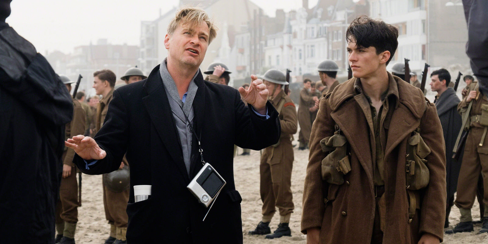

Dunkirk ดันเคิร์ก
เนื้อเรื่อง
เหล่าทหารอังกฤษและทหารฝ่ายสัมพันธมิตรนับแสน ๆ นาย ถูกโอบล้อมโดยกองกำลังฝ่ายข้าศึก เมื่อติดอยู่บนชายหาดโดยหันหลังชนทะเล พวกเขาจึงต้องเผชิญสถานการณ์อันไร้ทางออกเมื่อข้าศึกรุกคืบเข้ามา เรื่องราวเกิดขึ้นบนบก ในทะเล และกลางอากาศ เครื่องบินสปิตไฟร์ของกองทัพอากาศอังกฤษเข้าปะทะกับศัตรูบนฟากฟ้าเหนือช่องแคบอังกฤษเพื่อพยายามปกป้องทหารที่ไร้ทางสู้เบื้องล่าง ขณะเดียวกันเรือลำเล็กนับร้อย ๆ ลำทั้งของฝ่ายทหารและพลเรือนต่างก็ดำเนินการช่วยเหลืออย่างเต็มกำลัง พวกเขาเสี่ยงชีวิตแข่งกับเวลาเพื่อช่วยกำลังพลไว้แม้เพียงเสี้ยวหนึ่งก็ยังดี
หนังเรื่องนี้จับเหตุการณ์จริงในช่วงสงครามโลกครั้งที่ 2 บริเวณเมืองดันเคิร์กชายฝั่งของประเทศฝรั่งเศส กองทัพฝ่ายสัมพันธมิตรในขณะนั้นเสียทีให้ฝ่ายอักษะของนาซีจนล่าถอยมาติดค้างอยู่ที่เมืองนี้จำนวนมาก ในครั้งนั้นกองทัพอังกฤษของฝ่ายสัมพันธมิตรจนปัญญาในการอพยพเหล่าทหารของตนที่เมืองนี้ร่วมหลายแสนชีวิตให้ออกจากสมรภูมินรก ทั้งยังการถูกปิดล้อมก็ทำให้เหล่าทหารกลายเป็นเป้านิ่งให้เครื่องบินศัตรูยิงทิ้งเล่น เรียกว่ารอวันที่ฝ่ายอักษะไล่บี้มาถึงเพื่อสังหารทิ้งไม่เร็วก็ช้าเท่านั้นเอง และหากเป็นเช่นนั้นฝ่ายสัมพันธมิตรก็จะสูญเสียกำลังพลครั้งใหญ่ ยังส่งผลให้ฝ่ายอักษะได้รุกคืบสู่เกาะอังกฤษซึ่งเป็นจุดยุทธการสำคัญในสงครามครั้งนี้ของฝ่ายสัมพันธมิตรด้วย เพราะหากเสียอังกฤษเป้าหมายต่อไปย่อมต้องเป็นอเมริกาและแน่นอนหน้าประวัติศาสตร์โลกคงไม่เหมือนอย่างที่เราเห็นในปัจจุบันนี้แน่ๆ.

โดยได้แบ่งการเล่าเรื่องเป็นสถานการณ์ 3 ช่วงต่างสถานที่คือ ช่วง 1 สัปดาห์บนบริเวณชายหาดดันเคิร์กที่ ทอมมี่ ทหารเด็กหนุ่มชาวอังกฤษ กำลังหาหนทางหลบหนีขึ้นเรือขนผู้บาดเจ็บเพื่อกลับบ้าน ทำให้ระหว่างทางเขาได้พบเพื่อนร่วมหนีทหารอย่าง กิ๊บสัน ผู้เงียบงัน และทหารไฮแลนด์นาม อเล็กซ์ เหตุการณ์ต่อมาคือช่วง 1 วันของ ดอว์สัน และปีเตอร์ลูกชาย กับเพื่อนของปีเตอร์นาม จอร์จ ที่กำลังเอาเรือมูนสโตนออกไปช่วยเหล่าทหารกลับมาอังกฤษ และเหตุการณ์สุดท้ายคือช่วงเวลา 1 ชั่วโมงของทหารเครื่องบินขับไล่นาม ฟาร์ริเออร์ กับเพื่อนคือ คอลลินส์ ออกปฏิบัติการปราบเครื่องบินขับไล่และเครื่องบินทิ้งระเบิดที่ทำลายเรือขนส่งทหารตลอดจนฆ่าทหารที่อยู่บนชายฝั่ง.
การผลิตและกำกับ
การกำกับภาพยนตร์เริ่มต้นขึ้นเมื่อ 23 พฤษภาคม 2016 ที่เดิงแกร์ก ประเทศฝรั่งเศส ในเดือนเดียวกันนี้ ได้รับการร่วมการดำเนินการผลิตระหว่างเมืองอัวร์ ประเทศเนเธอร์แลนด์, เมืองสวาเนจ, เวย์เมาท์ และดอร์เซ็ต ประเทศอังกฤษ รวมถึงประภาคาร Point Vicente Interpretive Center และประภาคารในรานโชว์ ปาโลว เวอเดช ในสหรัฐ การถ่ายทำใช้สถานที่เดียวกันกับในประวัติศาสตร์ โดยมีการใช้นักแสดงสมทบประมาณ 6,000 คน ระหว่างถ่ายทำ โนแลนวิเคราะห์ว่าควรเป็นภาพยนตร์เงียบซึ่งสามารถโน้มน้าวผู้ชมด้วยการใช้รายละเอียดหนังเล่าเรื่องราว ประกอบกับบทสนทนาในภาพยนตร์นั้นมีเล็กน้อย ในภาพยนตร์ ทอม ฮาร์ดีเล่นเป็นนักบิน บทของเขาส่วนใหญ่ถ่ายทำในห้องนักบิน และถูกจำกัดการพบปะกับนักแสดงและเหล่าทีมงานอื่นๆ.